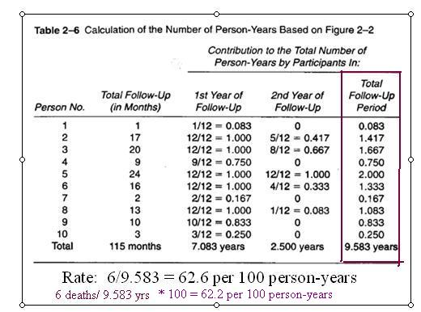

Obtaining the Denominator for Person-Time Rates
Lead Author(s): Jeff Martin, MD
There are two methods for obtaining the denominator for person-time rates.
Method 1: Data for Each Person
If you have exact entry, censoring, and event times for each person, you can sum person-time for each person for denominator.
In a cohort study, even a very large cohort study, the investigators record individual level data on when each person was enrolled and each date seen or each date when the person's outcome status was checked (such as doing a check of the National Death Index for mortality in a cohort). In a cohort study, therefore, both cumulative incidence and incidence rates can be calculated using individual data, and there is no reason to use grouped data. One of the reasons rates are attractive is that in other settings this kind of individual level information is not available.
Method 1: Example
Using the data from Follow-up Starting Times Szklo and Nieto we produced the following person-year table.

Here are the calculations from the Szklo and Nieto example for using individual level data to calculate the person-time rate. Note that the person time in months is just the sum of the number of months showing how long each person was observed in the study. Since they want to present the rate in the more conventional units of 100 person-years, the total months are converted to years. The numerator is, as always, just the number of events; here, 6 deaths. The decimal point is then moved for the fraction 6/9.583 to give the rate per 100 person-years.
Method 2: Only Population Data
If no individual data but you have the time interval and average population size, you can take their product as denominator.
Some datasets may only have the average population size at risk
Since the rate is assumed to be constant during the period for which the data are collected (say, one year), using the average population size assumes that additions and losses are approximately equal during the year. If losses and additions occur uniformly throughout the year, the total amount of person-time will be the same whether it is calculated by summing each person’s individual time in the population or by multiplying the average size of the population during the year by one year.
Method 2: Example
10 persons at baseline; 1 person at end of 2 years
- (6 deaths + 3 censored before 2 years = 9 losses)
For the second method using the average population size at risk during the time interval, all that is required is to know how many started at baseline and how many were left at the end.
Formula: Average number of persons at risk = N baseline + N end / 2 = 11 / 2 = 5.5
- The average number at risk is then calculated by adding the two numbers and dividing by 2.
- Or, alternatively, the number lost during the interval can be divided by 2 and subtracted from the baseline number:
- 9 lost/ 2 = 4.5 10-4.5=5.5.
Rate = 6/5.5 over 2 years =
- 0.545 per person-year or
- 54.5 per 100 person-years
The numerator is still 6 and the rate calculated this way is 54.5 per 100 person-years.
In this example with only 10 persons the rate calculated by the average population method differs more from the rate calculated from individual data (62.6 per 100 person-years) than it will in larger datasets where the methods are usually very close.
NOTE that this method is described as using grouped data. That phrase should not be confused here with an ecological study.
Summary Both Methods
Since E(vents) remains the same for both methods and N(umber)T(ime) will be equal if the uniformity assumption is valid,
- the same rate is obtained by either method.
References
#SzkloEpi
Szklo, M., & Nieto, F. (2007). Epidemiology: Beyond the Basics (2nd Edition ed.). Boston: Jones and Bartlett Publishers